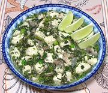

|
Fish with HerbsBurma - Kachin | ||||
| Serves: Effort: Sched: DoAhead: |
2 main *** 1 hr Part |
A delicious dish of fresh water fish, with plenty of flavorful herbs, especially good for warm summer days. It cooks very quickly, and is also very healthful with little oil and all fresh ingredients. | |||
|
1 ------ 2 3 1/2 3/4 ------ 1 1 1/2 2 ------ 1/2 2 1 3/4 ------ ar |
# --- cl in t --- c c c --- c T T t --- |
Fish Fillets (1) -- Paste Chili, green (2) Garlic Ginger Root Salt -- Herbs Rau Ram (3) Culantro (4) Scallion Greens Chili, green (5) -------- Water Lime Juice Oil (6) Salt -- Serve with Lime Wedges |
Prep - (35 min )
|